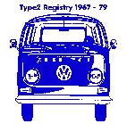

The right plate carries much more interesting information: Chassis number, original exterior and interrior color, optional extra's, production date, export country and model. This one I call the M-plate because the M-codes are printed on it plus some other codes.
Together with Andreas Plogmaker, Erik Meltzer (both from T2ig) and a few enthousiasts I try to figure out the meaning of the codes on the M-plate. I actually started this page because when I tried to search the interent I discovered that I could only find info on this plate for the T1 bus, not for the T2. When I asked a question on the Type 2 mailinglist I got a list of T2 M-codes made by Ron van Ness. Soon I found out what each part of the plate. That's when I decided to make a homepage about this subject.
1977-1979. The plate is fixed on the left side of the fresh air pipe under the dashboard. It is quite hard to read. It may help to put a piece of paper on the plate and then rub it with a pencil. A Flashlight might also work.
|
| |||||||||||||||||||||||||||
| D | Production date | E | Export Destination | |
| C | Chassis Number | Paint and Interrior Color | ||
| M | M-codes (optional extra's) | X | Model Type | |
| T | Transmission and Engine type | U | Unknown code |
|  | If you like, you can have your T2 registered. Just folow this link for more info: |
| 62 116 450 | |||
| 123 226 508 528 697 | |||
| 960977 | FS9 H86 008 046 | ||
| 13 5 | 7497 | HO | 2650 11 |
| 62116450 | Together with "26" this makes the chassis number: 2662116450 . "26" stands for "Double cabin pick-up" (crewcab). The "62" indicates that this bus is from model year 1976. |
| FS9 | M-code: ? (probably stands for a collection of codes) |
| H86 | M-code: ? (probably stands for a collection of codes) |
| 008 | M-code: ? |
| 046 | M-code: "Side turn signals" (I don't know why the list says "Denmark", this car was made for the Netherlands) |
| 123 | M-code: "Special suppression equipment" |
| 226 | M-code: "Retaining cables for tailboard" |
| 508 | M-code: "With vent wing in double cab door and in the opposite side panel" |
| 528 | M-code: "Rear view mirror, outer, right (Convex, LHD)" |
| 697 | M-code: ? |
| 9609 | Exterrior color: Army Green |
| 77 | Interrior color (seats and door panels): Canyon Brown |
| 13 5 | Manufactured in week 13, day 5, 1976 (note that the model year starts the year before in July/August, in this case in 1975. This means that week 43 would be the 43rd week in 1975) |
| 7497 | -- I haven't got a clue -- |
| HO | Delivered to: The Netherlands (Holland) |
| 2650 11 | Model type. "265" means Double cabin pick-up, left hand drive, passenger door right.". "11" indicates the engine type, a 1600 in this case |
|
Last update: January 21st, 2000 Copyright © 1997 Vincent Molenaar molenari@hotmail.com |
|
|